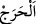
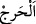

gibidir.”[165] Çünkü mükaşefe, amele tâbidir. Amel onun şartıdır.
et-Te’vîlâtü’n-necmiyye’de şöyle denilmektedir: Hicab inceldikçe îman daha
kuvvetli, kalp daha nurlu, daha saf ve temiz olur. Bu, hicâb kalkıp Hak cemâl sıfatı ile
tecellî edince yakîn ıyân hâline gelene kadar, sonra da celal sıfatı ile tecellî edip ıyân
ayn olana kadar devâm eder.
“Allah kimi saptırmak isterse” yani iradesini ona yönlendirmesi için onun içinde
dalaleti yaratırsa “onun gönlünü göğe çıkarıyormuş gibi dar ve sıkıntılı yapar.”
Hakk’ı kabulden uzaklaşır ve îman onun göğsüne girmez. Yani Allah küfrünü murad
ettiği kimsenin îmandan uzaklaşmasının sebeplerini ve küfre yönelmesinin sâiklerini
güçlendirir.
(  ) masdardır. Allah’ın dalalete düşürmek istediği kimsenin darlıkla
vasfedilmesi mübalağa içindir. (  ) ise ism–i fâildir. “Çok dar olan” demektir. Bu
mana, birinciye göre daha özeldir. Yani, her harac (sıkıntı) darlıktır, her darlık, harac
değildir. “”ın ağaçları sık olan yer, mânâsında olduğu da söylenmiştir. Nasıl ki
otlayan hayvanlar ağaçları sık olan yerlerdeki otlara ulaşamazsa, kâfirin de gönlüne
îman ulaşamaz.
Fahreddîn Razî, kalbin göğe çıkıyormuş gibi daraltılması konusunda der ki: Bu
benzetmenin iki yönü vardır:
1. Bir insana, göğe yükselme teklifi nasıl zor ve ağır bir iş olarak görünür de o işe
yönelmekten nefret ederse; aynen bunun gibi kâfire de îman etmek büyük ve külfetli bir
iş olarak görünür. Durdukça îmana meyledeceği yerde ondan uzaklaşır, nefreti artar.
2. Bu benzetmenin mânâsı ‘Kafirin kalbi İslâm olmaktan uzaklaştığı gibi îmanı kabul
etmekten de uzaklaşır.’ şeklinde takdir edilirse bu uzaklık, yerden göğe yükselen
kimsenin uzaklaşmasına benzetilmiş olur.
Nitekim Kâşifi Farsça tefsîrinde şöyle der: “Sanki o kimse göğe doğru yukarı gider.
Yani Cenâb-ı Hakk’ın kabûlünden kaçar ve göklere gitmek ister.”
Bil ki kalpler çeşit çeşittir. Bazılarına îman etmek zor gelir. Bu kâfirlerin kalbidir.
Bazılarına da yaptığı amellerden zevk ve lezzet almak (zevk ve vicdân) zor gelir. Bu da
îman ehlinden nâkısların kalbidir. İnsanlardan öyleleri vardır ki irfanla söylenmiş
sözlerden uzak dururlar. Hattâ, fazilet sahibi insanların mânevî hallerini inkâr edip
onların söz ve davranışlarını hafife alırlar. Bu ise ancak hayvanî sıfatlara düşkün, yırtıcı
hayvanlara ve şeytâna ait sıfatlar kendisine hâkim olan kimselerin işidir. Ruhânî
lezzetlerden hiç nasibi yoktur. Bu sebeple manevî âlemin sırlarına ait bilgileri, ağyardan
gizlemek tavsiye edilmiştir.
Sâib şöyle demiştir:
Sâib! Sadef niçin sinesini parçalamaz?
Bu zamanda mücevherden anlayan yok da ondan